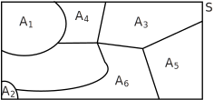
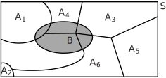

1 The theorem of total probability
To establish this result we start with the definition of a partition of a sample space.
1.1 A partition of a sample space
The collection of events is said to partition a sample space if
- for all
- for all
In essence, a partition is a collection of non-empty, non-overlapping subsets of a sample space whose union is the sample space itself. The definition is illustrated by Figure 10.
Figure 10

If is any event within then we can express as the union of subsets:
The definition is illustrated in Figure 11 in which an event in is represented by the shaded region.
Figure 11

The bracketed events are mutually exclusive (if one occurs then none of the others can occur) and so, using the addition law of probability for mutually exclusive events:
Each of the probabilities on the right-hand side may be expressed in terms of conditional probabilities:
Using these in the expression for , above, gives:
This is the theorem of Total Probability. A related theorem with many applications in statistics can be deduced from this, known as Bayes’ theorem.